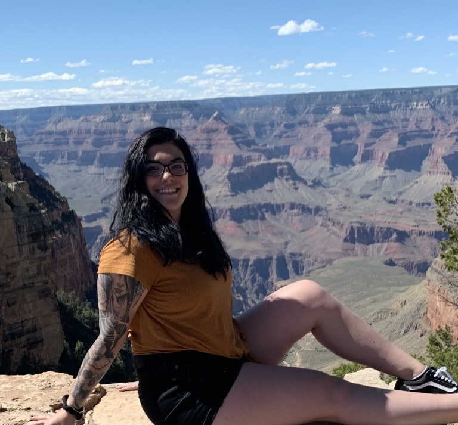

A little about me.
I've made my home base in Boardman, OH. I've worked retail for the last 10 years but needed a change. I remembered how much I loved playing with the coding when MySpace was big and decided to give it a shot. I started a class online and was hooked and wanted to learn how to build my own site to fit my own specific needs.


That curiosity then opened a door that could never be shut. When I learned how to build my first website, I realized I found something that gave me the freedom & versatility I was looking for in my work. Now I've made a full switch to front-end development, where I can use my organization skills and eye for detail to write clean, elegant code.